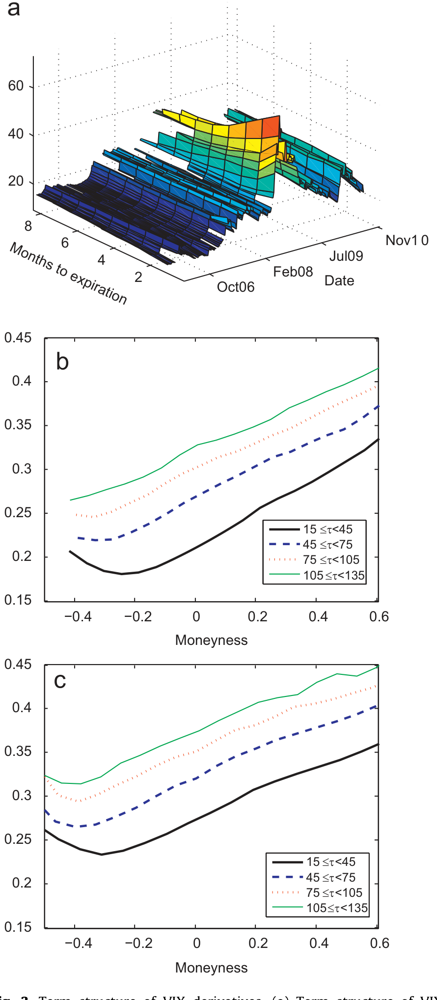
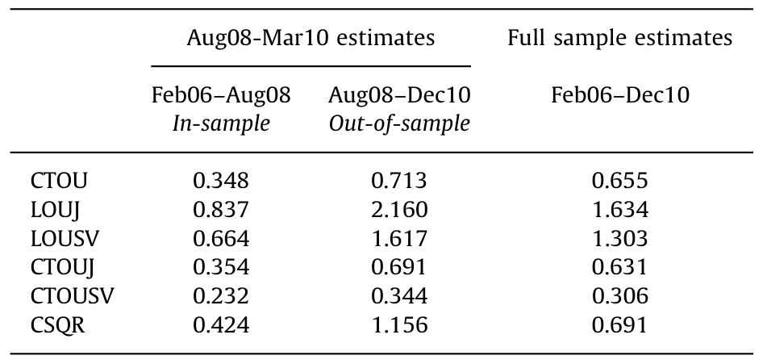
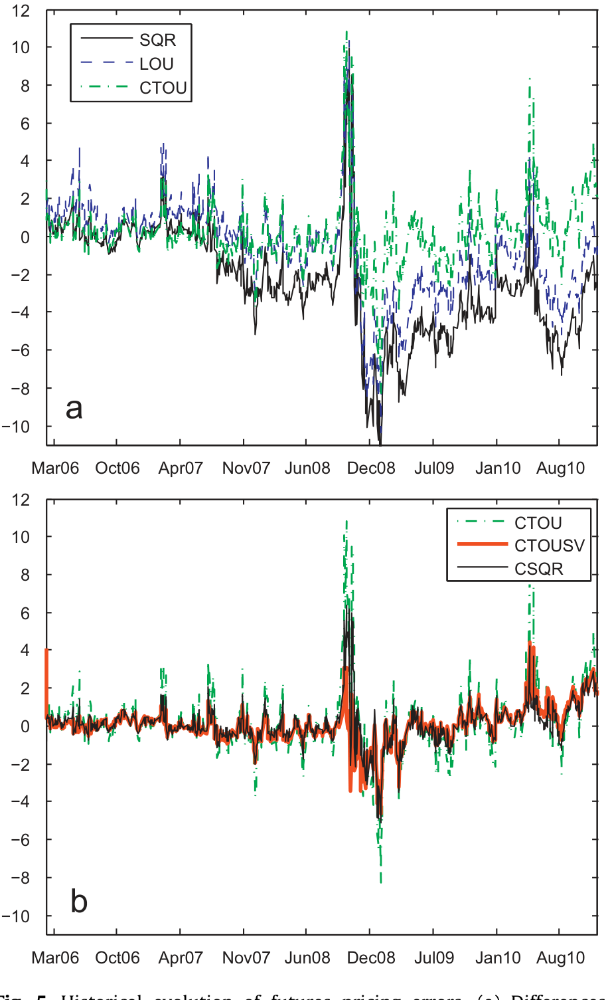
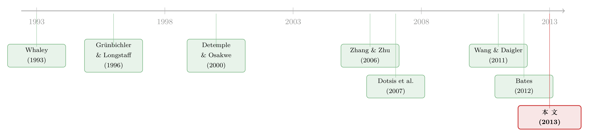

恐慌指数也能定价：当 2008 把所有「均值回归」模型一起按在地上摩擦
本文读的是 Mencía & Sentana (2013, Journal of Financial Economics)：他们用 2006–2010 全样本的 VIX 期货与期权价格，检验了所有主流的 VIX 衍生品定价模型，发现那些「简单均值回归」的模型在 2008–2009 危机里被打得稀烂；真正能把 VIX 衍生品「稳稳」定价的，是一个作用在 log VIX 上、同时带 时变中枢 (central tendency) 和 随机波动率 (stochastic volatility) 的过程——而且，市场里还藏着一个会抬高长期波动率水平的、显著的风险溢价。
1 一个被「平静牛市」惯坏的研究领域
先讲一个略带讽刺的事实：给波动率衍生品定价的理论，出现得比这些衍生品本身还早。
早在 1993 年，Whaley 就写下了波动率期货的定价公式——可那时候，VIX 期货还要再等十一年才会在 CBOE 期货交易所 (CFE) 挂牌（2004 年 3 月 26 日），VIX 期权更要等到 2006 年 2 月。换句话说，整整一代人在「纸上」给一个还不能交易的东西定价。等到这些合约真的开始活跃——2010 年 VIX 期货与期权日均合计成交逼近 260,000 张——人们手里已经攒了一堆现成的模型：Whaley (1993) 的几何布朗运动 (geometric Brownian motion, GBM)、Grünbichler 和 Longstaff (1996) 的平方根过程 (square-root process, SQR)、Detemple 和 Osakwe (2000) 的对数正态 Ornstein-Uhlenbeck 过程 (log-normal Ornstein-Uhlenbeck, LOU)。
而且，早期的实证检验（Zhang & Zhu, 2006；Dotsis, Psychoyios & Skiadopoulos, 2007；Wang & Daigler, 2011）对这些模型相当宽容，甚至有几篇得出「GBM 居然拟合得不错」这种今天看来很奇怪的结论。
但本文的两位作者一眼看穿了问题所在：这些研究的样本，几乎都落在 2007 年夏天结束的那一段又长又平静的牛市里。 GBM 之所以「拟合得不错」，是因为在一段波动率温吞吞、看不出明显均值回归的时期，「不带均值回归」这个致命缺陷根本暴露不出来。
于是一个自然的问题是：如果把样本拉长，让它穿过 2008 那场把 VIX 推到历史最高收盘价 80.86（2008 年 11 月 20 日，盘中一度触及 89.53）的金融海啸，这些模型还撑得住吗？
这就是这篇论文的「测试场」。它的样本从 2006 年 2 月（期权上市）一直到 2010 年 12 月，横跨了三个截然不同的「政权」——危机前异常平静的牛市（VIX 一度低到 9.89）、2008 秋天的极端恐慌、以及随后一路下行直到 2010 年希腊债务危机重新搅局。没有比这更残酷的考场了。
2 真正的「案发现场」：VIX 持续得离谱
要理解为什么老模型会崩，得先看清楚 VIX 这个序列长什么样。
作者用 1990–2010 年全部 5,280 个交易日的 VIX 收盘价，估了一串 ARMA 模型。结果触目惊心：log VIX 的一阶自相关系数高于 0.98，而且高阶自相关衰减得极慢。这意味着什么？意味着 VIX 一旦冲高，会在高位「赖着不走」很久——危机期间动辄几个月维持在 30、40 以上。
AR(1) 完全抓不住这个相关图形，连 ARMA(1,1) 都只是「略有改善」。作者发现，必须上到 ARMA(2,1) 才能让自相关与偏自相关贴近样本值。而且这不是危机数据闹的——哪怕只用 1990 到 2007 年夏天的数据，ARMA(2,1) 依然是必需的。
接着，一个更要命的特征浮出水面：log VIX 的条件方差也在变。作者沿用 Demos 和 Sentana (1998) 的单边 LM 检验，在所有常规显著性水平上干净利落地拒绝了 log VIX 的条件同方差——也就是说，「波动率的波动率」本身是时变的。他们后面会证明，自己偏好的连续时间模型，恰好对应一个 ARMA(2,1)-GARCH(1,1) 的离散表示。
现在回头看 SQR 和 LOU 的毛病就一目了然了：这两个过程都隐含假设 VIX 以一个简单的、非负的指数速率回归到长期均值。可现实里的 VIX，是一个高度持续、且「波动率会呼吸」的家伙。把一个会赖在高位几个月的序列，硬塞进一个「快速指数回归 + 常数波动率」的模具里，平静期看不出问题，危机一来，模具就裂了。

Figure 3: Term structure of VIX derivatives. (a) Term structure of VIX
如图 3 所示，VIX 期货的期限结构在 2008 年末出现了剧烈的整体抬升，但斜率是向下的——市场并不认为 VIX 会永远停在那么高的位置（这一点 Schwert, 2011 也强调过）。任何模型若想在这种时候定对价，就必须同时容纳「极高的当前水平」和「向下倾斜、预期回落」这两件看似矛盾的事。
3 识别策略：用两套价格，撬出两个测度
这篇论文的方法论核心，在于它同时使用了三类信息：VIX 期货价格、VIX 欧式期权价格、以及 VIX 指数本身的历史时间序列。
为什么要这么贪心？因为定价 VIX 衍生品，本质上要估计两个东西：
- 真实测度 (physical measure) 下 VIX 的动态——这要靠历史 VIX 序列来钉住；
- 风险中性测度 (risk-neutral measure, Q) 下 VIX 的动态——这要靠衍生品价格来钉住。
两者之间的差，就是风险溢价 (risk premium)。只用衍生品价格，你估不出风险溢价；只用历史序列，你又定不了衍生品。把两套数据放在一起，才能把这道「楔子」量出来。
技术上，对于似然函数有闭式解的模型（SQR、LOU），作者用极大似然 (maximum likelihood, ML) 估计；对于没有闭式似然的扩展模型，他们沿用 Trolle 和 Schwartz (2009) 的做法，把模型写成状态空间 (state space) 形式，用伪极大似然 (pseudo-maximum likelihood) 标定。理论价格需要对条件特征函数做 Fourier 反演时，他们用了 Carr 和 Madan (1999)、Amengual 和 Xiu (2012) 的方法。
这里有一个值得停下来品的设计选择。Sepp (2008) 走的是另一条路——只用 S&P500 的数据去给 VIX 衍生品定价。这听起来更「本源」，因为 VIX 本就是从 S&P500 期权价格算出来的。但作者明确反对这条路：
关键的反驳是——你没法用 Sepp (2008) 的模型反推出真实的 VIX 指数，去喂给 CBOE 那个算 VIX 的闭式公式。强行绕这一圈，只会层层叠加定价误差。
所以作者选择把当前的 VIX 水平当作「充分统计量 (sufficient statistic)」，定期权时则把 VIX 期货当作充分统计量（Song & Xiu, 2012 后来也采用了同样的假设）。这个选择看似朴素，却避免了「用 500 只成分股的红利和风险溢价模型去给指数衍生品定价、却连指数本身都复制不出来」那种荒谬。
理论价格与观测价格之间的差，被建模成定价误差。作者把误差拆成共同分量与特质分量——这是个聪明的参数化，既允许期货之间、期权之间存在同期相关，又不让模型把噪声当信号：
$$F(t,T)=F_M\big(t,T,V(t),\phi\big)+x_{ft}+e_{ft,T}$$
$$c(t,T,K)=c_M\big[t,T,K,F(t,T),\phi\big]+\varsigma(M(t,T))\big[(1-Z_o)x_{ot}+Z_o\,e_{ct,T}(K)\big]$$
其中 \(x_{ft}\sim N(0,\sigma_{fx}^2)\) 是所有期货共同的误差，\(e_{ft,T}\sim N(0,\sigma_{fe}^2)\) 是特质误差，期权那边同理。
4 模型：从两块「积木」到三个补丁
这是一篇有完整理论模型的论文，值得把骨架一步步搭出来。
4.1 两块基准积木
第一块是 SQR（平方根过程），即 Grünbichler-Longstaff 用的 CIR 型扩散。VIX 水平 \(V(t)\) 直接服从：
$$dV(t)=\kappa\big(\theta-V(t)\big)\,dt+\sigma\sqrt{V(t)}\,dW(t)$$
这里 \(\kappa\) 是均值回归速度，\(\theta\) 是长期均值。它的好处是 \(V(t)\) 恒正、有闭式矩；附录里也给出了它的自相关恰好是 \(\mathrm{corr}[V(T),V(t)]=\exp(-\kappa\tau)\)——一条单调指数衰减的曲线。问题正出在这条曲线：它太「干脆」了，配不上 VIX 那条衰减极慢的自相关图。
第二块是 LOU（对数正态 OU），Detemple-Osakwe 用的过程，让 log VIX 服从 OU：
$$d\log V(t)=\kappa\big(\alpha-\log V(t)\big)\,dt+\sigma\,dW(t)$$
LOU 比 SQR 多了一份「右偏」的味道（取了对数），作者后面会发现它整体优于 SQR，尤其在期权上。但它骨子里还是「单一指数速率回归 + 常数波动率」，危机里照样力不从心。
4.2 三个补丁
作者的贡献，是给这两块积木打上三个经验上真正重要的补丁：
补丁一：时变中枢 (time-varying central tendency)。 不再让 log VIX 回归到一个常数 \(\alpha\)，而是回归到一个会自己漂移的中枢 \(y(t)\)，后者再以更慢的速度回归到长期水平。直觉上，这正是 VIX 「冲高后赖在高位」的来源——长期均值本身被危机暂时抬高了。这个想法源自利率期限结构文献里 Jegadeesh 和 Pennacchi (1996)、Balduzzi、Das 和 Foresi (1998) 的「中枢即第二因子」。
$$d\log V(t)=\kappa\big(y(t)-\log V(t)\big)\,dt+\sqrt{\omega(t)}\,dW_v(t)$$
$$dy(t)=\lambda\big(\bar{y}-y(t)\big)\,dt+\sigma\,dW_y(t)$$
补丁二：随机波动率 (stochastic volatility)。 让 log VIX 创新项的方差 \(\omega(t)\) 本身是个随机过程——这正是前面那个被拒绝的「条件同方差」的对症下药。作者强调，这个随机波动率是不被 VIX 张成的 (unspanned)，这一点借鉴了 Bates (2012)。
补丁三：跳跃 (jumps)。 给 LOU 加上跳，进一步引入条件分布的非正态性。
把这些放进定价框架，模型 \(M\) 给出的理论期货价格，就是风险中性测度下到期 VIX 的条件期望：
欧式看涨期权则用「在同一到期日的期货合约」而非 VIX 本身来定价，从而保证期权的定价误差不会被期货公式的扭曲污染：
$$c_M\big[t,T,K,F(t,T),\phi\big]=\exp(-r\tau)\,\mathbb{E}^Q_M\big[\max(V(T)-K,0)\,\big|\,I(t),\phi\big]$$
看跌期权再由 put-call-forward 平价关系得到：
$$p_M\big[t,T,K,F(t,T),\phi\big]=c_M\big[t,T,K,F(t,T),\phi\big]-\exp(-r\tau)\big[F(t,T)-K\big]$$
5 主要结果：哪个补丁治哪种病
样本规模先交个底：作者一共用了 8,665 个期货价格和 87,870 个期权价格（其中看涨 58,099、看跌 29,771）。

Table 3: reports the in- and out-of-sample RMSEs of 0.7
核心结论可以浓缩成三句话：
第一，基准模型在危机里集体失灵。 LOU 整体优于 SQR，尤其在期权定价上——但它的表现在样本后半段的市场动荡里明显恶化。这正印证了第 1 节的怀疑：老模型的「好成绩」是平静期借来的。如表 3 所示，作者把样本内 (in-sample) 与样本外 (out-of-sample) 的定价均方根误差 (RMSE) 摆在一起对比，扩展模型相对基准的改进，在动荡期尤其抢眼。
第二，赢家是「log VIX + 时变中枢 + 随机波动率」。 在所有候选里，一个作用在 log VIX 上、同时带中枢和随机波动率的过程，最可靠地给 VIX 衍生品定了价。有意思的是，跳跃这个补丁，重要性远不如前两个——这告诉我们，VIX 衍生品定价的难点，主要不在「瞬间跳变」，而在「持续性」和「波动率的波动率」。

Figure 5: Historical evolution of futures pricing errors. (a) Differences
如图 5 所示，期货定价误差的历史演变清楚地暴露了基准模型在危机期间的系统性偏离，而带中枢的扩展把这些偏离大幅压平。
第三，也是最有经济味道的一点：存在一个显著的风险溢价，它会平移长期波动率水平。 也就是说，风险中性测度下 VIX 回归的「目标」，比真实测度下要高——投资者愿意为「持有正的未来波动率敞口」付一笔可观的溢价。这与 Andersen 和 Bondarenko (2007) 等人记录的「VIX 几乎一致地高于已实现波动率」是同一枚硬币的两面。
这个结论还有一个外溢含义：既然观测到的 VIX 与 S&P500 的不可观测积分波动率之间存在已知关系，那么很多人用来给 S&P 期权定价的随机波动率模型，恐怕应该允许比通常假设更慢的均值回归，以及时变的「波动率之波动率」。（关于「给资产定价模型补上一颗会怕波动的心」，可参见《市场之外，长期投资者还在怕什么？——给 CAPM 装上第三颗「会怕波动」的心》。）
6 文献脉络
把这条线捋一捋，会看到一个相当典型的「理论先行、实证追赶、危机校准」的故事。
起点是 Whaley (1993)：第一个给波动率衍生品定价的人，用的却是不带均值回归的 GBM——在 VIX 还不能交易的年代，这是一个勇敢但注定要被修正的起点。接着，两个真正的均值回归模型登场：Grünbichler 和 Longstaff (1996) 的 SQR，和 Detemple 和 Osakwe (2000) 的 LOU，它们构成了此后二十年 VIX 衍生品定价的「标准积木」。
然后，实证检验跟了上来：Zhang 和 Zhu (2006) 检验 SQR，Dotsis、Psychoyios 和 Skiadopoulos (2007) 给 SQR 加跳并顺手估了 GBM，Wang 和 Daigler (2011) 用期权数据比较 SQR 与 GBM。但真正关键的一步在于看清这些研究的盲点——它们的样本几乎都落在 2007 年夏天前的平静牛市里，于是「不带均值回归」的缺陷被掩盖了。
于是反转出现：本文把样本拉过 2008 危机，让老模型现了原形，再从利率期限结构文献里搬来「时变中枢」这件武器（Jegadeesh & Pennacchi, 1996；Balduzzi, Das & Foresi, 1998），并吸收 Bates (2012) 的「不可张成随机波动率」，最终落到一个能穿越牛熊的 log VIX 过程上。几乎同期，Song 和 Xiu (2012) 从另一个角度（同时看 S&P500 与 VIX 期权的状态价格密度）呼应了「把 VIX 当充分统计量」的思路。

7 评论与延伸（Q&A + 研究方向）
(a) 几个可能的疑问
Q：把「当前 VIX」当充分统计量，会不会丢掉 S&P500 里的信息？
会丢一点，作者也承认理想情况下「两个都用」最好，只是留给未来研究。但他们的取舍是有道理的：用 S&P500 反推 VIX 衍生品要绕一大圈，且 Sepp (2008) 那条路连 VIX 指数本身都复制不出来，强行做只会层层累积误差。把 VIX（或 VIX 期货）当充分统计量，是「定价精度优先于结构纯粹」的务实选择。
Q：「时变中枢」和「随机波动率」听起来都在加自由度，会不会只是过拟合？
这是最该警惕的质疑，但有两点反证。其一，时变中枢的必要性在1990–2007 的纯平静期子样本里就已出现（ARMA(2,1) 不可省），并非危机数据催生的人为产物。其二，作者比较的是样本外 RMSE（见表 3），过拟合在样本外会被惩罚而非奖励。两个补丁能同时改善样本外表现，才是它们「真有料」的证据。
Q：为什么跳跃 (jumps) 反而没那么重要？
因为 VIX 衍生品定价的主要矛盾是「持续性」与「波动率之波动率」，而不是瞬间跳变。跳跃主要改善条件分布的尾部非正态性，但在已经有了时变中枢（管住高位赖着不走）和随机波动率（管住条件异方差）之后，跳跃能额外解释的部分就有限了。
Q：LOU 优于 SQR，到底赢在哪？
赢在对数变换天然带来的右偏，更贴合波动率「向上有长尾」的形态，所以在期权（尤其反映尾部的虚值期权）上优势明显。但 LOU 的内核仍是单速率指数回归 + 常数波动率，所以危机一来照样退化——这说明「换个分布」不够，得「换动态」。
Q：那个「平移长期波动率」的风险溢价，方向对得上直觉吗？
对得上。它意味着风险中性的长期 VIX 高于真实测度的长期 VIX，等价于投资者愿为做多波动率敞口付费——这与「VIX 长期高于已实现波动率」(Andersen & Bondarenko, 2007) 完全一致，也解释了为什么 VIX 被叫作市场的「恐惧溢价」而非单纯的「恐惧度量」。
Q：这篇结论对给 S&P500 期权定价的人有什么用？
直接的政策含义是：常用的 S&P 随机波动率模型，可能把均值回归设得太快、且忽略了「波动率之波动率」的时变。换言之，VIX 衍生品市场反过来给 S&P 期权定价模型上了一课——它对瞬时波动率动态的约束，不该被丢掉。
(b) 几个可能的研究问题与提案
1. 把「VIX 充分统计量」和「S&P500 信息」真正联合起来。 - 【经济故事】作者明说留给未来：同时用 VIX 衍生品和 S&P500 期权，能不能既定准 VIX 衍生品、又内部一致地复制出 VIX 指数？这关系到两个期权市场是否「各说各话」。 - 【可行性】中。数据现成（CBOE 的 VIX 与 SPX 期权），难点在联合状态空间的维数与识别；可借鉴 Song & Xiu (2012) 的状态价格密度框架。
2. 把同样的诊断搬到信用波动率 / 公司债流动性上。 - 【经济故事】公司债市场也有「平静期看不出、危机期才暴露」的均值回归错配——比如信用利差的流动性分量在 2008、2020 都剧烈跳升后久久不退。一个带时变中枢的过程，是否比标准 OU 更能拟合信用波动率指数？ - 【可行性】中。需要公司债波动率指数或 CDX 期权数据；识别策略类似本文（历史序列定真实测度 + 期权定风险中性）。
3. 危机期间 VIX 风险溢价的「持有人结构」来源。 - 【经济故事】本文量出了风险溢价，但没回答「谁在付这笔溢价、谁在收」。如果能匹配 VIX 衍生品的持仓数据（散户看涨为主 vs. 机构对冲），就能把这个总量溢价拆到投资者类型上。 - 【可行性】低到中。CFE 持仓与 CBOE 的散户/机构分类数据获取困难，但一旦拿到，识别相对直接。
4. 时变中枢的「拐点」能否预测实体经济？ - 【经济故事】既然长期波动率中枢 \(y(t)\) 会被危机抬高再缓慢回落，它的拐点是否领先于宏观转折？这把波动率衍生品从「定价对象」变成「宏观预测器」。 - 【可行性】高。\(y(t)\) 可从本文模型滤出，再做标准的领先指标回归即可。
8 我的判断
贡献。 这篇论文最扎实的地方，不在于「又提了一个模型」，而在于它用一个跨越牛熊的全样本，把整个 VIX 衍生品定价文献做了一次诚实的体检，并诊断出病根——不是分布形态，而是动态结构：持续性（时变中枢）和波动率之波动率（随机波动率）。「跳跃不重要、中枢和随机波动率重要」这个排序，对后续建模是很有价值的指南。把当前 VIX 当充分统计量、并把误差拆成共同/特质分量，也是干净的工程化选择。
对识别的担忧。 最大的隐忧是风险溢价与模型设定的纠缠：那个「平移长期波动率」的溢价，是从真实测度（历史 VIX）与风险中性测度（衍生品价格）之差里挤出来的，如果真实测度动态被设错（比如中枢的回归速度），溢价的估计会跟着偏。作者用样本外 RMSE 和子样本稳健性做了不少防御，但真实测度本身就难估，这个担忧无法完全消除。其次，把当前 VIX 当充分统计量虽然务实，却也意味着模型对 S&P500 层面的信息「自愿失明」，万一两个市场在极端时刻背离，单 VIX 模型可能错过信号。
后续想看到的。 我最想看到的，是作者自己点到却没做的那一步——VIX 衍生品与 S&P500 期权的联合定价，并检验两个市场的隐含动态是否一致（关于股、债期权市场「是否各说各话」的类似张力，可参见《股与债，真的「各说各话」吗？——一个结构模型如何为期权市场的「不一致」翻案》）。另外，这套「时变中枢 + 随机波动率」的诊断框架，很适合搬到危机更频繁、流动性更脆弱的信用衍生品上去重做一遍——那里的「平静期掩盖、危机期暴露」可能比 VIX 还要严重。
参考文献
- Andersen, T. G., Bondarenko, O. (2007). Construction and Interpretation of Model-Free Implied Volatility. NBER Working Paper No. W13449.
- Balduzzi, P., Das, S. R., Foresi, S. (1998). The central tendency: a second factor in bond yields. Review of Economics and Statistics 80(1), 62–72.
- Bates, D. S. (2012). U.S. stock market crash risk, 1926–2010. Journal of Financial Economics 105(2), 229–259.
- Carr, P., Madan, D. B. (1999). Option valuation using the fast Fourier transform. Journal of Computational Finance 2(4), 61–73.
- Demos, A., Sentana, E. (1998). Testing for GARCH effects: a one-sided approach. Journal of Econometrics 86(1), 97–127.
- Detemple, J., Osakwe, C. (2000). The valuation of volatility options. European Finance Review 4(1), 21–50.
- Dotsis, G., Psychoyios, D., Skiadopoulos, G. (2007). An empirical comparison of continuous-time models of implied volatility indices. Journal of Banking & Finance 31(11), 3584–3603.
- Grünbichler, A., Longstaff, F. A. (1996). Valuing futures and options on volatility. Journal of Banking & Finance 20(6), 985–1001.
- Jegadeesh, N., Pennacchi, G. G. (1996). The behavior of interest rates implied by the term structure of Eurodollar futures. Journal of Money, Credit and Banking 28(3), 426–446.
- Mencía, J., Sentana, E. (2013). Valuation of VIX derivatives. Journal of Financial Economics 108(2), 367–391.
- Schwert, G. W. (2011). Stock volatility during the recent financial crisis. European Financial Management 17(5), 789–805.
- Sepp, A. (2008). VIX option pricing in a jump-diffusion model. Risk Magazine, April, 84–89.
- Song, Z., Xiu, D. (2012). A Tale of Two Option Markets: State-Price Densities Implied from S&P 500 and VIX Option Prices. Working paper, Federal Reserve Board and University of Chicago.
- Trolle, A. B., Schwartz, E. S. (2009). Unspanned stochastic volatility and the pricing of commodity derivatives. Review of Financial Studies 22(11), 4423–4461.
- Wang, Z., Daigler, R. T. (2011). The performance of VIX option pricing models: empirical evidence beyond simulation. Journal of Futures Markets 31(3), 251–281.
- Whaley, R. E. (1993). Derivatives on market volatility: hedging tools long overdue. Journal of Derivatives 1(1), 71–84.
- Zhang, J. E., Zhu, Y. (2006). VIX futures. Journal of Futures Markets 26(6), 521–531.